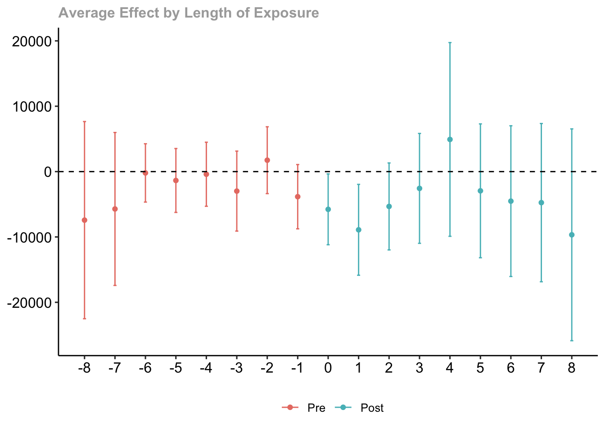
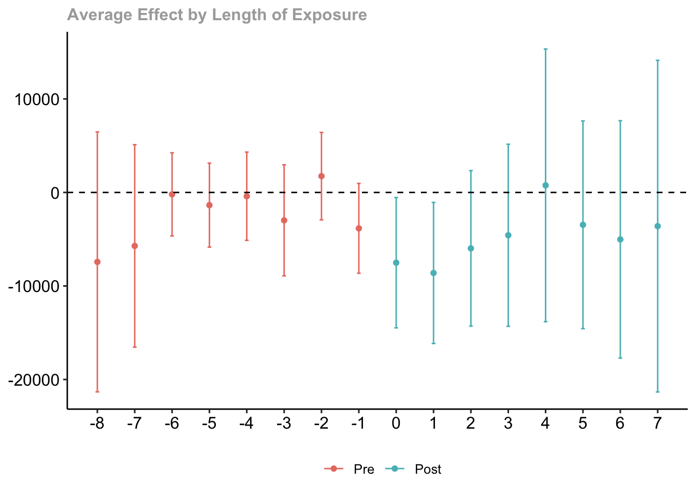
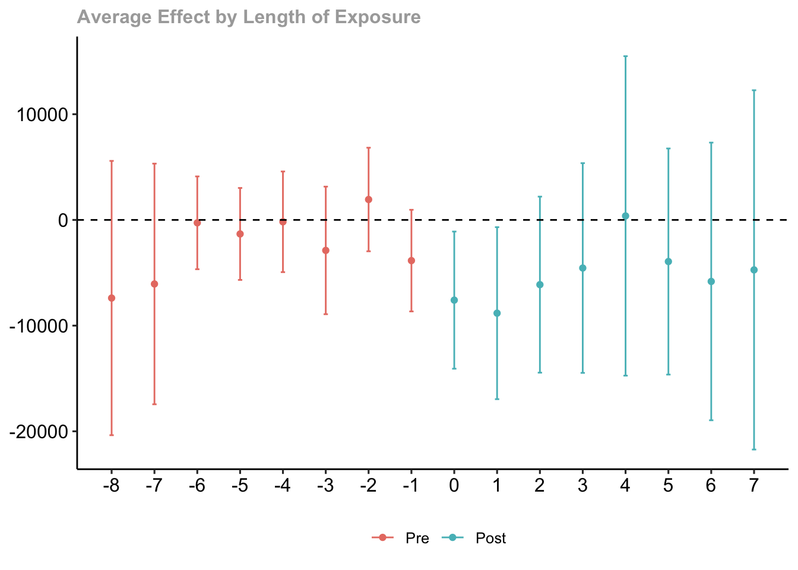
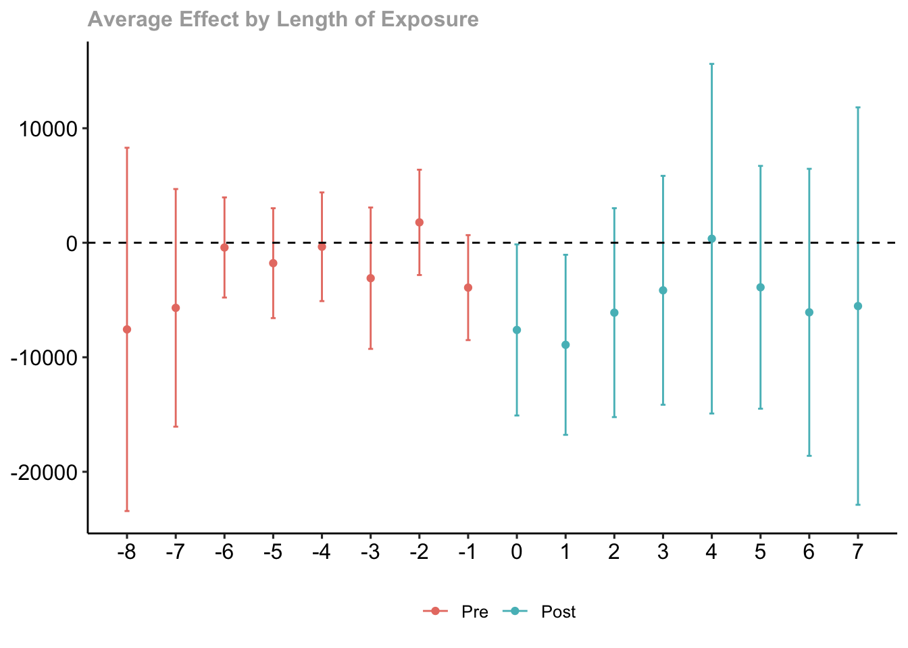

load("job_displacement_data.RData")Exercise 1 Solutions
This exercise will involve estimating causal effect parameters using a difference-in-differences identification strategy that involves conditioning on covariates in the parallel trends assumption and possibly allows for anticipation effects.
In particular, we will use data from the National Longitudinal Study of Youth to learn about causal effects of job displacement (where job displacement roughly means “losing your job through no fault of your own” — a mass layoff is a main example).
To start with, load the data from the file job_displacement_data.RData by running
which will load a data.frame called job_displacement_data. This is what the data looks like
head(job_displacement_data) id year group income female white occ_score
1 7900002 1984 0 31130 1 1 4
2 7900002 1985 0 32200 1 1 3
3 7900002 1986 0 35520 1 1 4
4 7900002 1987 0 43600 1 1 4
5 7900002 1988 0 39900 1 1 4
6 7900002 1990 0 38200 1 1 4You can see that the data contains the following columns:
id- an individual identifieryear- the year for this observationgroup- the year that person lost his/her job.group=0for those that do not lose a job in any period being considered.income- a person’s wage and salary income in this yearfemale- 1 for females, 0 for maleswhite- 1 for white, 0 for non-white
For the results below, we will mainly use the did package which you can install using install.packages("did"), and you can load it using
library(did)Question 1
We will start by computing group-time average treatment effects without including any covariates in the parallel trends assumption.
- Use the
didpackage to compute all available group-time average treatment effects.
Solutions:
no_covs <- att_gt(yname="income",
tname="year",
idname="id",
gname="group",
data=job_displacement_data)Warning in pre_process_did(yname = yname, tname = tname, idname = idname, :
Dropped 26 units that were already treated in the first period.summary(no_covs)
Call:
att_gt(yname = "income", tname = "year", idname = "id", gname = "group",
data = job_displacement_data)
Reference: Callaway, Brantly and Pedro H.C. Sant'Anna. "Difference-in-Differences with Multiple Time Periods." Journal of Econometrics, Vol. 225, No. 2, pp. 200-230, 2021. <https://doi.org/10.1016/j.jeconom.2020.12.001>, <https://arxiv.org/abs/1803.09015>
Group-Time Average Treatment Effects:
Group Time ATT(g,t) Std. Error [95% Simult. Conf. Band]
1985 1985 -9455.7583 3861.042 -19528.8115 617.2948
1985 1986 -14981.1547 4673.005 -27172.5348 -2789.7746 *
1985 1987 -6129.2132 4200.985 -17089.1417 4830.7153
1985 1988 -4815.9179 4980.184 -17808.6958 8176.8600
1985 1990 -8011.9173 5466.432 -22273.2656 6249.4310
1985 1991 -8164.4924 6444.642 -24977.8874 8648.9026
1985 1992 -6325.8880 5779.045 -21402.8090 8751.0330
1985 1993 -9669.5840 5527.646 -24090.6329 4751.4649
1986 1985 -1801.9373 2599.738 -8584.3796 4980.5051
1986 1986 -1919.4474 3510.325 -11077.5154 7238.6207
1986 1987 -2596.8189 4846.428 -15240.6413 10047.0034
1986 1988 -2081.7535 6986.801 -20309.5851 16146.0782
1986 1990 -6064.0942 6633.956 -23371.3876 11243.1992
1986 1991 -5903.9636 6766.574 -23557.2437 11749.3164
1986 1992 -6804.4833 7425.492 -26176.8110 12567.8445
1986 1993 -1801.5755 7455.891 -21253.2138 17650.0628
1987 1985 4518.5745 5248.997 -9175.5067 18212.6557
1987 1986 -8012.4879 4547.337 -19876.0119 3851.0360
1987 1987 7048.8565 6692.480 -10411.1225 24508.8355
1987 1988 4489.4666 6807.248 -13269.9275 22248.8608
1987 1990 8004.1361 6737.479 -9573.2386 25581.5108
1987 1991 9475.0656 7284.194 -9528.6318 28478.7630
1987 1992 8533.5413 10080.963 -17766.6333 34833.7160
1987 1993 7881.3931 7330.973 -11244.3452 27007.1314
1988 1985 -8350.7706 4631.991 -20435.1498 3733.6085
1988 1986 -3420.8529 3637.104 -12909.6754 6067.9695
1988 1987 -3617.6742 3493.304 -12731.3380 5495.9897
1988 1988 -1173.8167 3174.614 -9456.0523 7108.4190
1988 1990 280.6263 5825.393 -14917.2132 15478.4658
1988 1991 6099.7271 4046.620 -4457.4799 16656.9341
1988 1992 13737.8166 12846.521 -19777.4078 47253.0410
1988 1993 1688.7819 8220.831 -19758.5022 23136.0659
1990 1985 -5281.5363 3433.800 -14239.9612 3676.8886
1990 1986 3654.1728 2560.200 -3025.1209 10333.4664
1990 1987 5934.8952 3040.891 -1998.4696 13868.2599
1990 1988 1034.1988 3161.435 -7213.6530 9282.0505
1990 1990 -4343.9488 12267.489 -36348.5390 27660.6414
1990 1991 -21910.2102 4908.635 -34716.3237 -9104.0966 *
1990 1992 -15365.9271 3994.383 -25786.8532 -4945.0010 *
1990 1993 -16411.1053 6244.878 -32703.3363 -118.8743 *
1991 1985 891.2874 3590.076 -8474.8439 10257.4186
1991 1986 -2816.6357 3576.210 -12146.5924 6513.3211
1991 1987 -1340.0549 3135.896 -9521.2781 6841.1683
1991 1988 -7025.0387 3718.362 -16725.8557 2675.7782
1991 1990 2568.6223 6028.719 -13159.6720 18296.9167
1991 1991 -12150.6450 4287.933 -23337.4115 -963.8784 *
1991 1992 1433.9979 4595.143 -10554.2472 13422.2430
1991 1993 -2679.8275 7112.789 -21236.3485 15876.6935
1992 1985 -12110.0572 6180.931 -28235.4586 4015.3442
1992 1986 -3287.5606 2537.390 -9907.3443 3332.2230
1992 1987 2300.0285 3528.032 -6904.2362 11504.2931
1992 1988 -7273.9345 2714.144 -14354.8502 -193.0189 *
1992 1990 7351.4926 4801.529 -5175.1936 19878.1788
1992 1991 -10031.7028 7619.266 -29909.5691 9846.1636
1992 1992 -8990.8504 4258.882 -20101.8273 2120.1264
1992 1993 -8662.6119 14973.627 -47727.2335 30402.0097
1993 1985 -7424.6641 5468.588 -21691.6364 6842.3081
1993 1986 677.9060 3381.472 -8143.9982 9499.8102
1993 1987 1424.1385 3835.053 -8581.1117 11429.3886
1993 1988 4778.2556 1746.084 222.9054 9333.6057 *
1993 1990 -3797.3928 4628.671 -15873.1102 8278.3246
1993 1991 3664.8825 6840.202 -14180.4872 21510.2523
1993 1992 -4108.9169 5801.940 -19245.5705 11027.7368
1993 1993 -22828.3617 6567.402 -39962.0233 -5694.7001 *
---
Signif. codes: `*' confidence band does not cover 0
P-value for pre-test of parallel trends assumption: 0
Control Group: Never Treated, Anticipation Periods: 0
Estimation Method: Doubly Robust- Bonus Question Try to manually calculate \(ATT(g=1992, t=1992)\). Can you calculate exactly the same number as in part (a)?
Solutions:
mean(subset(job_displacement_data, group==1992 & year==1992)$income) -
mean(subset(job_displacement_data, group==1992 & year==1991)$income) -
( mean(subset(job_displacement_data, group==0 & year==1992)$income) -
mean(subset(job_displacement_data, group==0 & year==1991)$income) )[1] -8990.85- Aggregate the group-time average treatment effects into an event study and plot the results. What do you notice? Is there evidence against parallel trends?
Solutions:
no_covs_es <- aggte(no_covs, type="dynamic")
ggdid(no_covs_es)
- Aggregate the group-time average treatment effects into a single overall treatment effect. How do you interpret the results?
Solutions:
no_covs_overall <- aggte(no_covs, type="group")
summary(no_covs_overall)
Call:
aggte(MP = no_covs, type = "group")
Reference: Callaway, Brantly and Pedro H.C. Sant'Anna. "Difference-in-Differences with Multiple Time Periods." Journal of Econometrics, Vol. 225, No. 2, pp. 200-230, 2021. <https://doi.org/10.1016/j.jeconom.2020.12.001>, <https://arxiv.org/abs/1803.09015>
Overall summary of ATT's based on group/cohort aggregation:
ATT Std. Error [ 95% Conf. Int.]
-5631.049 2009.565 -9569.723 -1692.374 *
Group Effects:
Group Estimate Std. Error [95% Simult. Conf. Band]
1985 -8444.241 4700.126 -19889.596 3001.115
1986 -3881.734 6126.311 -18800.018 11036.550
1987 7572.077 6619.391 -8546.914 23691.067
1988 4126.627 4890.516 -7782.349 16035.603
1990 -14507.798 4355.249 -25113.338 -3902.258 *
1991 -4465.492 4715.478 -15948.230 7017.247
1992 -8826.731 8360.343 -29185.143 11531.681
1993 -22828.362 6462.085 -38564.294 -7092.429 *
---
Signif. codes: `*' confidence band does not cover 0
Control Group: Never Treated, Anticipation Periods: 0
Estimation Method: Doubly RobustQuestion 2
A major issue in the job displacement literature concerns a version of anticipation. In particular, there is some empirical evidence that earnings of displaced workers start to decline before they are actually displaced (a rough explanation is that firms where there are mass layoffs typically “struggle” in the time period before the mass layoff actually takes place and this can lead to slower income growth for workers at those firms).
- Is there evidence of anticipation in your results from Question 1?
Solutions:
There is a moderate amount of evidence for anticipation in the previous results. It hinges on the estimate for event-time equal to -1. It is negative which is in line with the discussion about anticipation above, but it is only marginally statistically significant.
- Repeat parts (a)-(d) of Question 1 allowing for one year of anticipation.
Solutions:
# part a
ant_res <- att_gt(yname="income",
tname="year",
idname="id",
gname="group",
data=job_displacement_data,
anticipation=1)Warning in pre_process_did(yname = yname, tname = tname, idname = idname, :
Dropped 26 units that were already treated in the first period. summary(ant_res)
Call:
att_gt(yname = "income", tname = "year", idname = "id", gname = "group",
data = job_displacement_data, anticipation = 1)
Reference: Callaway, Brantly and Pedro H.C. Sant'Anna. "Difference-in-Differences with Multiple Time Periods." Journal of Econometrics, Vol. 225, No. 2, pp. 200-230, 2021. <https://doi.org/10.1016/j.jeconom.2020.12.001>, <https://arxiv.org/abs/1803.09015>
Group-Time Average Treatment Effects:
Group Time ATT(g,t) Std. Error [95% Simult. Conf. Band]
1986 1985 -1801.9373 2637.305 -8447.6078 4843.7333
1986 1986 -3721.3846 3692.454 -13025.8967 5583.1275
1986 1987 -4398.7562 4035.808 -14568.4747 5770.9624
1986 1988 -3883.6907 6377.636 -19954.5162 12187.1347
1986 1990 -7866.0314 6149.536 -23362.0739 7630.0110
1986 1991 -7705.9009 6433.556 -23917.6395 8505.8378
1986 1992 -8606.4205 6922.425 -26050.0443 8837.2032
1986 1993 -3603.5128 6755.388 -20626.2250 13419.1995
1987 1985 4518.5745 5460.994 -9242.4313 18279.5803
1987 1986 -8012.4879 4701.940 -19860.7751 3835.7992
1987 1987 -963.6314 7276.588 -19299.7028 17372.4399
1987 1988 -3523.0213 7994.976 -23669.3383 16623.2957
1987 1990 -8.3518 6296.508 -15874.7459 15858.0423
1987 1991 1462.5776 7589.264 -17661.3964 20586.5516
1987 1992 521.0534 9526.404 -23484.2640 24526.3708
1987 1993 -131.0948 7403.803 -18787.7296 18525.5399
1988 1985 -8350.7706 4674.623 -20130.2233 3428.6820
1988 1986 -3420.8529 3463.723 -12148.9916 5307.2858
1988 1987 -3617.6742 3619.131 -12737.4217 5502.0734
1988 1988 -4791.4908 4401.680 -15883.1619 6300.1802
1988 1990 -3337.0478 8180.250 -23950.2306 17276.1349
1988 1991 2482.0529 6363.899 -13554.1573 18518.2632
1988 1992 10120.1424 14533.152 -26501.5387 46741.8236
1988 1993 -1928.8923 7476.284 -20768.1705 16910.3860
1990 1985 -5281.5363 3373.666 -13782.7425 3219.6699
1990 1986 3654.1728 2480.289 -2595.8377 9904.1833
1990 1987 5934.8952 2890.621 -1349.0994 13218.8897
1990 1988 1034.1988 3167.434 -6947.3291 9015.7266
1990 1990 -4343.9488 12209.279 -35109.7687 26421.8712
1990 1991 -21910.2102 4491.669 -33228.6418 -10591.7785 *
1990 1992 -15365.9271 3899.003 -25190.9152 -5540.9391 *
1990 1993 -16411.1053 6250.408 -32161.3325 -660.8781 *
1991 1985 891.2874 3471.665 -7856.8633 9639.4380
1991 1986 -2816.6357 3552.765 -11769.1484 6135.8771
1991 1987 -1340.0549 3332.791 -9738.2616 7058.1518
1991 1988 -7025.0387 3873.773 -16786.4497 2736.3723
1991 1990 2568.6223 6363.298 -13466.0749 18603.3196
1991 1991 -9582.0227 9188.794 -32736.6064 13572.5611
1991 1992 4002.6202 8634.215 -17754.4959 25759.7363
1991 1993 -111.2052 10465.683 -26483.3858 26260.9755
1992 1985 -12110.0572 6789.117 -29217.7628 4997.6484
1992 1986 -3287.5606 2445.489 -9449.8803 2874.7591
1992 1987 2300.0285 3451.590 -6397.5352 10997.5921
1992 1988 -7273.9345 2662.708 -13983.6169 -564.2522 *
1992 1990 7351.4926 4587.882 -4209.3820 18912.3673
1992 1991 -10031.7028 7928.273 -30009.9359 9946.5304
1992 1992 -19022.5532 7204.014 -37175.7451 -869.3614 *
1992 1993 -18694.3146 8280.700 -39560.6188 2171.9895
1993 1985 -7424.6641 5005.794 -20038.6230 5189.2947
1993 1986 677.9060 3139.230 -7232.5509 8588.3629
1993 1987 1424.1385 3873.730 -8337.1656 11185.4425
1993 1988 4778.2556 1600.827 744.3767 8812.1344 *
1993 1990 -3797.3928 4115.722 -14168.4854 6573.6998
1993 1991 3664.8825 6713.530 -13252.3528 20582.1179
1993 1992 -4108.9169 5524.881 -18030.9090 9813.0753
1993 1993 -26937.2785 5418.226 -40590.5140 -13284.0431 *
---
Signif. codes: `*' confidence band does not cover 0
P-value for pre-test of parallel trends assumption: 0
Control Group: Never Treated, Anticipation Periods: 1
Estimation Method: Doubly Robust # part b
mean(subset(job_displacement_data, group==1992 & year==1992)$income) -
mean(subset(job_displacement_data, group==1992 & year==1990)$income) -
( mean(subset(job_displacement_data, group==0 & year==1992)$income) -
mean(subset(job_displacement_data, group==0 & year==1990)$income) )[1] -19022.55 # part c
ant_es <- aggte(ant_res, type="dynamic")
ggdid(ant_es)
# part d
ant_overall <- aggte(ant_res, type="group")
summary(ant_overall)
Call:
aggte(MP = ant_res, type = "group")
Reference: Callaway, Brantly and Pedro H.C. Sant'Anna. "Difference-in-Differences with Multiple Time Periods." Journal of Econometrics, Vol. 225, No. 2, pp. 200-230, 2021. <https://doi.org/10.1016/j.jeconom.2020.12.001>, <https://arxiv.org/abs/1803.09015>
Overall summary of ATT's based on group/cohort aggregation:
ATT Std. Error [ 95% Conf. Int.]
-7711.634 2327.567 -12273.58 -3149.686 *
Group Effects:
Group Estimate Std. Error [95% Simult. Conf. Band]
1986 -5683.6710 5470.628 -17794.15 6426.809
1987 -440.4114 6497.956 -14825.12 13944.294
1988 508.9529 6006.259 -12787.27 13805.175
1990 -14507.7979 4197.887 -23800.78 -5214.819 *
1991 -1896.8692 8323.324 -20322.44 16528.702
1992 -18858.4339 4474.770 -28764.36 -8952.513 *
1993 -26937.2785 5812.733 -39805.09 -14069.471 *
---
Signif. codes: `*' confidence band does not cover 0
Control Group: Never Treated, Anticipation Periods: 1
Estimation Method: Doubly RobustQuestion 3
Now, let’s suppose that we think that parallel trends holds only after we condition on a person sex and race (in reality, you could think of including many other variables in the parallel trends assumption, but let’s just keep it simple). In my view, I think allowing for anticipation is desirable in this setting too, so let’s keep allowing for one year of anticipation.
- Answer parts (a), (c), and (d) of Question 1 but including
sexandwhiteas covariates.
Solutions:
# part a
covs_res <- att_gt(yname="income",
tname="year",
idname="id",
gname="group",
data=job_displacement_data,
anticipation=1,
xformla=~female + white)Warning in pre_process_did(yname = yname, tname = tname, idname = idname, :
Dropped 26 units that were already treated in the first period.Warning in pre_process_did(yname = yname, tname = tname, idname = idname, : Be aware that there are some small groups in your dataset.
Check groups: 1992,1993. summary(covs_res)
Call:
att_gt(yname = "income", tname = "year", idname = "id", gname = "group",
xformla = ~female + white, data = job_displacement_data,
anticipation = 1)
Reference: Callaway, Brantly and Pedro H.C. Sant'Anna. "Difference-in-Differences with Multiple Time Periods." Journal of Econometrics, Vol. 225, No. 2, pp. 200-230, 2021. <https://doi.org/10.1016/j.jeconom.2020.12.001>, <https://arxiv.org/abs/1803.09015>
Group-Time Average Treatment Effects:
Group Time ATT(g,t) Std. Error [95% Simult. Conf. Band]
1986 1985 -1724.0034 2493.960 -7957.3577 4509.3509
1986 1986 -4258.8672 3475.987 -12946.6795 4428.9451
1986 1987 -4861.6136 3901.328 -14612.5144 4889.2873
1986 1988 -4729.6121 6550.950 -21102.9257 11643.7016
1986 1990 -8685.9902 5919.644 -23481.4317 6109.4514
1986 1991 -8753.8554 6140.301 -24100.8026 6593.0917
1986 1992 -9530.3951 6819.824 -26575.7285 7514.9382
1986 1993 -4727.7652 6608.974 -21246.1040 11790.5736
1987 1985 4559.7049 5401.196 -8939.9374 18059.3472
1987 1986 -8337.6804 4628.947 -19907.1778 3231.8171
1987 1987 -1244.4854 7055.388 -18878.5822 16389.6114
1987 1988 -4009.1142 7547.463 -22873.0934 14854.8651
1987 1990 -483.2506 6510.734 -16756.0494 15789.5483
1987 1991 865.8558 7991.793 -19108.6731 20840.3847
1987 1992 -1.1369 9485.687 -23709.4748 23707.2010
1987 1993 -760.5834 7646.473 -19872.0265 18350.8596
1988 1985 -8427.9592 4483.846 -19634.7939 2778.8755
1988 1986 -3208.6634 3785.889 -12671.0400 6253.7133
1988 1987 -3540.3348 3667.076 -12705.7526 5625.0830
1988 1988 -4496.7178 4488.311 -15714.7134 6721.2778
1988 1990 -2886.2705 7805.516 -22395.2224 16622.6814
1988 1991 3026.1289 6141.168 -12322.9835 18375.2413
1988 1992 10422.7498 15019.310 -27116.2158 47961.7153
1988 1993 -1710.3233 7388.194 -20176.2295 16755.5830
1990 1985 -5423.4224 3557.666 -14315.3831 3468.5383
1990 1986 4124.3571 2819.216 -2921.9351 11170.6493
1990 1987 6034.5096 3012.839 -1495.7213 13564.7406
1990 1988 1473.8450 3277.915 -6718.9116 9666.6016
1990 1990 -4087.0904 12272.756 -34761.3721 26587.1913
1990 1991 -21451.7077 4889.978 -33673.6224 -9229.7929 *
1990 1992 -15350.4684 3736.307 -24688.9203 -6012.0165 *
1990 1993 -16489.8656 6266.352 -32151.8605 -827.8708 *
1991 1985 787.4357 3522.377 -8016.3237 9591.1950
1991 1986 -2463.7125 3696.944 -11703.7810 6776.3560
1991 1987 -1271.9440 3335.578 -9608.8221 7064.9341
1991 1988 -6698.7830 3813.606 -16230.4339 2832.8679
1991 1990 2753.4298 6037.666 -12336.9920 17843.8516
1991 1991 -9246.2829 8636.010 -30830.9534 12338.3877
1991 1992 4013.8999 8088.141 -16201.4400 24229.2398
1991 1993 -162.2495 10086.002 -25371.0029 25046.5038
1992 1985 -12170.1207 6394.614 -28152.6913 3812.4499
1992 1986 -3584.4939 2410.058 -9608.1443 2439.1566
1992 1987 2598.5246 3653.567 -6533.1284 11730.1775
1992 1988 -7330.9148 2871.569 -14508.0580 -153.7715 *
1992 1990 7649.2124 4740.277 -4198.5416 19496.9663
1992 1991 -10130.9141 7932.263 -29956.6541 9694.8259
1992 1992 -19327.7970 6701.003 -36076.1514 -2579.4426 *
1992 1993 -19410.4421 8689.023 -41127.6126 2306.7284
1993 1985 -7391.9287 5580.167 -21338.8875 6555.0302
1993 1986 50.7636 3523.194 -8755.0376 8856.5648
1993 1987 1618.3041 3763.007 -7786.8800 11023.4883
1993 1988 4453.4544 1769.420 31.0011 8875.9077 *
1993 1990 -3630.4984 3887.086 -13345.8049 6084.8080
1993 1991 3439.7874 6512.448 -12837.2945 19716.8692
1993 1992 -4123.7577 5953.866 -19004.7314 10757.2161
1993 1993 -27304.4090 5711.372 -41579.2990 -13029.5190 *
---
Signif. codes: `*' confidence band does not cover 0
P-value for pre-test of parallel trends assumption: 0
Control Group: Never Treated, Anticipation Periods: 1
Estimation Method: Doubly Robust # part c
covs_es <- aggte(covs_res, type="dynamic")
ggdid(covs_es)
# part d
covs_overall <- aggte(covs_res, type="group")
summary(covs_overall)
Call:
aggte(MP = covs_res, type = "group")
Reference: Callaway, Brantly and Pedro H.C. Sant'Anna. "Difference-in-Differences with Multiple Time Periods." Journal of Econometrics, Vol. 225, No. 2, pp. 200-230, 2021. <https://doi.org/10.1016/j.jeconom.2020.12.001>, <https://arxiv.org/abs/1803.09015>
Overall summary of ATT's based on group/cohort aggregation:
ATT Std. Error [ 95% Conf. Int.]
-7931.965 2389.043 -12614.4 -3249.526 *
Group Effects:
Group Estimate Std. Error [95% Simult. Conf. Band]
1986 -6506.8712 5271.801 -18120.53 5106.783
1987 -938.7858 6869.413 -16071.94 14194.369
1988 871.1134 6286.149 -12977.12 14719.352
1990 -14344.7830 4317.628 -23856.42 -4833.149 *
1991 -1798.2108 8271.638 -20020.44 16424.014
1992 -19369.1196 4406.584 -29076.72 -9661.517 *
1993 -27304.4090 5819.843 -40125.39 -14483.431 *
---
Signif. codes: `*' confidence band does not cover 0
Control Group: Never Treated, Anticipation Periods: 1
Estimation Method: Doubly Robust- By default, the
didpackage uses the doubly robust approach that we discussed during our session. How do the results change if you use a regression approach or propensity score re-weighting?
Solutions:
For simplicity, I am just going to show the overall results when using the regression approach and the propensity score re-weighting approach.
reg_res <- att_gt(yname="income",
tname="year",
idname="id",
gname="group",
data=job_displacement_data,
anticipation=1,
xformla=~female + white,
est_method="reg")Warning in pre_process_did(yname = yname, tname = tname, idname = idname, :
Dropped 26 units that were already treated in the first period.Warning in pre_process_did(yname = yname, tname = tname, idname = idname, : Be aware that there are some small groups in your dataset.
Check groups: 1992,1993. summary(aggte(reg_res, type="group"))
Call:
aggte(MP = reg_res, type = "group")
Reference: Callaway, Brantly and Pedro H.C. Sant'Anna. "Difference-in-Differences with Multiple Time Periods." Journal of Econometrics, Vol. 225, No. 2, pp. 200-230, 2021. <https://doi.org/10.1016/j.jeconom.2020.12.001>, <https://arxiv.org/abs/1803.09015>
Overall summary of ATT's based on group/cohort aggregation:
ATT Std. Error [ 95% Conf. Int.]
-7919.691 2241.563 -12313.07 -3526.308 *
Group Effects:
Group Estimate Std. Error [95% Simult. Conf. Band]
1986 -6434.0559 5552.204 -18399.92 5531.812
1987 -912.7508 6601.460 -15139.93 13314.428
1988 862.1890 6513.785 -13176.04 14900.415
1990 -14343.8838 4120.677 -23224.59 -5463.180 *
1991 -1796.2167 8395.139 -19889.05 16296.621
1992 -19441.0738 4325.936 -28764.14 -10118.005 *
1993 -27302.1029 5815.805 -39836.07 -14768.134 *
---
Signif. codes: `*' confidence band does not cover 0
Control Group: Never Treated, Anticipation Periods: 1
Estimation Method: Outcome Regression ipw_res <- att_gt(yname="income",
tname="year",
idname="id",
gname="group",
data=job_displacement_data,
anticipation=1,
xformla=~female + white,
est_method="ipw")Warning in pre_process_did(yname = yname, tname = tname, idname = idname, : Dropped 26 units that were already treated in the first period.
Warning in pre_process_did(yname = yname, tname = tname, idname = idname, : Be aware that there are some small groups in your dataset.
Check groups: 1992,1993. summary(aggte(ipw_res, type="group"))
Call:
aggte(MP = ipw_res, type = "group")
Reference: Callaway, Brantly and Pedro H.C. Sant'Anna. "Difference-in-Differences with Multiple Time Periods." Journal of Econometrics, Vol. 225, No. 2, pp. 200-230, 2021. <https://doi.org/10.1016/j.jeconom.2020.12.001>, <https://arxiv.org/abs/1803.09015>
Overall summary of ATT's based on group/cohort aggregation:
ATT Std. Error [ 95% Conf. Int.]
-7931.69 2395.857 -12627.48 -3235.896 *
Group Effects:
Group Estimate Std. Error [95% Simult. Conf. Band]
1986 -6506.2796 5366.182 -18329.69 5317.130
1987 -938.6980 7027.544 -16422.62 14545.222
1988 871.1522 5952.535 -12244.18 13986.484
1990 -14345.0498 4649.411 -24589.19 -4100.914 *
1991 -1798.1771 8179.503 -19820.23 16223.875
1992 -19368.1395 4545.188 -29382.64 -9353.642 *
1993 -27303.3746 5786.646 -40053.20 -14553.548 *
---
Signif. codes: `*' confidence band does not cover 0
Control Group: Never Treated, Anticipation Periods: 1
Estimation Method: Inverse Probability WeightingYou can see that the results are very similar across estimation strategies in this example.
Question 4
Finally, the data that we have contains a variable called occ_score which is roughly a variable that measures the occupation “quality”. Suppose that we (i) are interested in including a person’s occupation in the parallel trends assumption, (ii) are satisfied that occ_score sufficiently summarizes a person’s occupation, but (iii) are worried that a person’s occupation is a “bad control” (in the sense that it could be affected by the treatment).
- Repeat parts (a), (c), and (d) of Question 1 but including
occ_scorein the parallel trends assumption. Continue to allow for 1 year of anticipation effects.
Solutions:
# part a
occ_res <- att_gt(yname="income",
tname="year",
idname="id",
gname="group",
data=job_displacement_data,
anticipation=1,
xformla=~female + white + occ_score)Warning in pre_process_did(yname = yname, tname = tname, idname = idname, :
Dropped 26 units that were already treated in the first period.Warning in pre_process_did(yname = yname, tname = tname, idname = idname, : Be aware that there are some small groups in your dataset.
Check groups: 1992,1993. summary(occ_res)
Call:
att_gt(yname = "income", tname = "year", idname = "id", gname = "group",
xformla = ~female + white + occ_score, data = job_displacement_data,
anticipation = 1)
Reference: Callaway, Brantly and Pedro H.C. Sant'Anna. "Difference-in-Differences with Multiple Time Periods." Journal of Econometrics, Vol. 225, No. 2, pp. 200-230, 2021. <https://doi.org/10.1016/j.jeconom.2020.12.001>, <https://arxiv.org/abs/1803.09015>
Group-Time Average Treatment Effects:
Group Time ATT(g,t) Std. Error [95% Simult. Conf. Band]
1986 1985 -2195.2252 2439.588 -8404.432 4013.9820
1986 1986 -4943.5726 3602.994 -14113.864 4226.7192
1986 1987 -5648.5248 4289.363 -16565.754 5268.7046
1986 1988 -5486.8776 6630.855 -22363.640 11389.8853
1986 1990 -9355.8673 5982.470 -24582.370 5870.6353
1986 1991 -9341.8431 6334.782 -25465.046 6781.3597
1986 1992 -10108.9739 6896.816 -27662.657 7444.7096
1986 1993 -5529.8989 6878.792 -23037.708 11977.9101
1987 1985 3820.8904 5398.740 -9919.911 17561.6916
1987 1986 -8340.0613 4527.388 -19863.109 3182.9868
1987 1987 -1140.5127 6506.136 -17699.843 15418.8177
1987 1988 -3872.3621 7761.166 -23625.978 15881.2537
1987 1990 -245.3064 6759.948 -17450.635 16960.0221
1987 1991 1163.8056 7799.982 -18688.606 21016.2171
1987 1992 357.4786 10043.690 -25205.589 25920.5459
1987 1993 -573.4507 7592.304 -19897.283 18750.3811
1988 1985 -9335.5672 4430.668 -20612.445 1941.3104
1988 1986 -3340.6154 3594.759 -12489.948 5808.7171
1988 1987 -3382.3715 3682.071 -12753.930 5989.1874
1988 1988 -4249.2023 4417.909 -15493.606 6995.2013
1988 1990 -2636.2457 7843.029 -22598.220 17325.7285
1988 1991 3600.9662 6373.120 -12619.815 19821.7473
1988 1992 10870.4646 14238.511 -25369.205 47110.1341
1988 1993 -1193.1813 7759.334 -20942.136 18555.7735
1990 1985 -6306.9131 3456.006 -15103.094 2489.2683
1990 1986 3619.3463 2639.107 -3097.673 10336.3654
1990 1987 6300.9857 3219.508 -1893.264 14495.2354
1990 1988 1669.2779 3526.601 -7306.581 10645.1366
1990 1990 -3975.3758 11948.397 -34386.276 26435.5247
1990 1991 -21181.3377 4652.110 -33021.827 -9340.8486 *
1990 1992 -15120.4248 3939.587 -25147.410 -5093.4392 *
1990 1993 -16136.7404 6346.583 -32289.979 16.4980
1991 1985 275.2798 3819.124 -9445.103 9995.6625
1991 1986 -2972.7479 3680.667 -12340.734 6395.2379
1991 1987 -1061.8712 3120.582 -9004.335 6880.5930
1991 1988 -6533.7425 4019.775 -16764.820 3697.3347
1991 1990 2973.9229 6405.612 -13329.555 19277.4010
1991 1991 -8630.5915 8646.878 -30638.511 13377.3280
1991 1992 4461.4852 8498.282 -17168.230 26091.2006
1991 1993 625.5103 10665.656 -26520.575 27771.5955
1992 1985 -11419.6688 6848.246 -28849.734 6010.3965
1992 1986 -3525.3900 2823.484 -10711.684 3660.9041
1992 1987 2689.5473 3771.550 -6909.751 12288.8460
1992 1988 -7336.2075 3054.516 -15110.521 438.1057
1992 1990 7673.1535 4706.013 -4304.528 19650.8347
1992 1991 -10337.3059 7310.414 -28943.675 8269.0627
1992 1992 -19895.1794 7162.624 -38125.395 -1664.9639 *
1992 1993 -19597.7636 9015.071 -42542.801 3347.2743
1993 1985 -7566.2072 4808.026 -19803.530 4671.1158
1993 1986 50.1090 3584.093 -9072.077 9172.2953
1993 1987 1781.7444 3852.290 -8023.053 11586.5418
1993 1988 4377.3771 1839.394 -304.223 9058.9772
1993 1990 -3777.5137 4161.498 -14369.302 6814.2747
1993 1991 3464.8956 6455.712 -12966.098 19895.8893
1993 1992 -4041.1832 5761.972 -18706.477 10624.1110
1993 1993 -27091.4909 5916.956 -42151.249 -12031.7333 *
---
Signif. codes: `*' confidence band does not cover 0
P-value for pre-test of parallel trends assumption: 0
Control Group: Never Treated, Anticipation Periods: 1
Estimation Method: Doubly Robust # part c
occ_es <- aggte(occ_res, type="dynamic")
ggdid(occ_es)
# part d
occ_overall <- aggte(occ_res, type="group")
summary(occ_overall)
Call:
aggte(MP = occ_res, type = "group")
Reference: Callaway, Brantly and Pedro H.C. Sant'Anna. "Difference-in-Differences with Multiple Time Periods." Journal of Econometrics, Vol. 225, No. 2, pp. 200-230, 2021. <https://doi.org/10.1016/j.jeconom.2020.12.001>, <https://arxiv.org/abs/1803.09015>
Overall summary of ATT's based on group/cohort aggregation:
ATT Std. Error [ 95% Conf. Int.]
-7873.709 2280.252 -12342.92 -3404.498 *
Group Effects:
Group Estimate Std. Error [95% Simult. Conf. Band]
1986 -7202.2226 5471.742 -19171.48 4767.038
1987 -718.3913 6853.787 -15710.83 14274.050
1988 1278.5603 6195.673 -12274.28 14831.398
1990 -14103.4696 4109.816 -23093.56 -5113.379 *
1991 -1181.1987 7776.333 -18191.68 15829.282
1992 -19746.4715 4435.389 -29448.74 -10044.200 *
1993 -27091.4909 5931.060 -40065.49 -14117.487 *
---
Signif. codes: `*' confidence band does not cover 0
Control Group: Never Treated, Anticipation Periods: 1
Estimation Method: Doubly Robust- What additional assumptions (with respect to occupation) do you need to make in order to rationalize this approach?